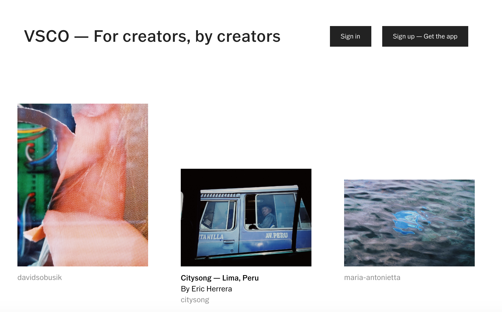
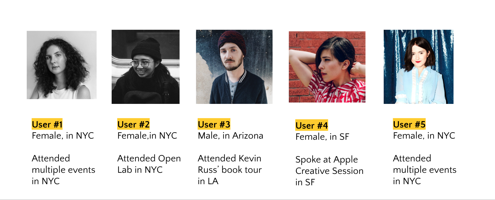
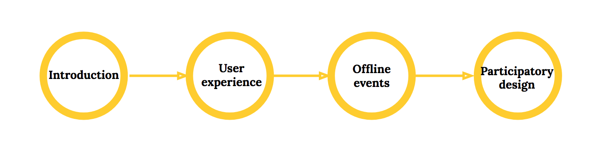
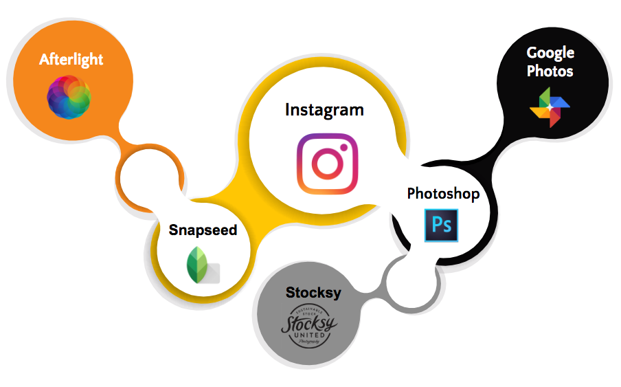
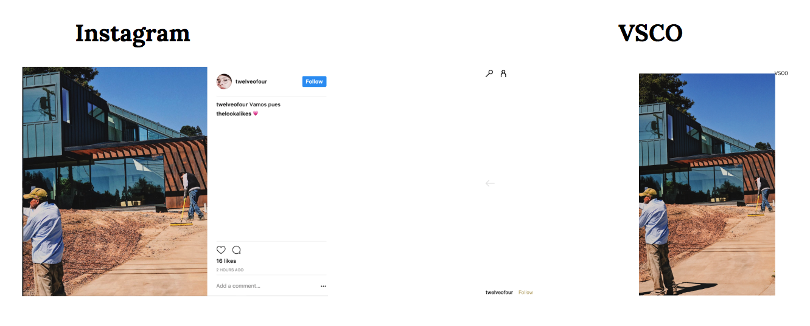
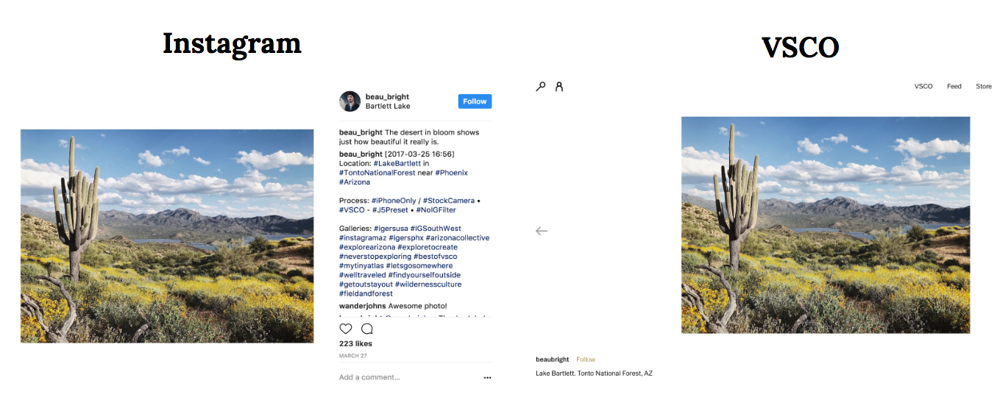
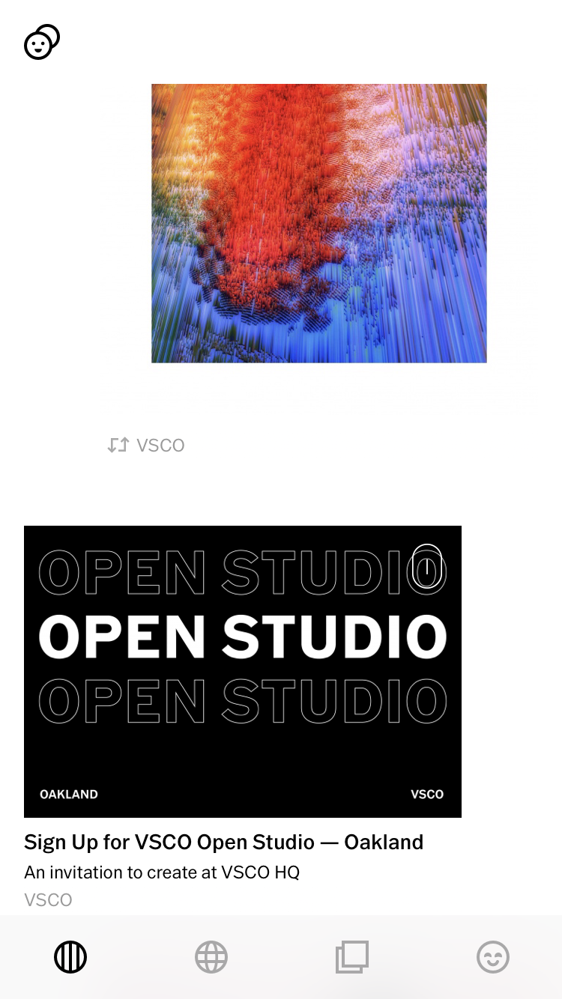
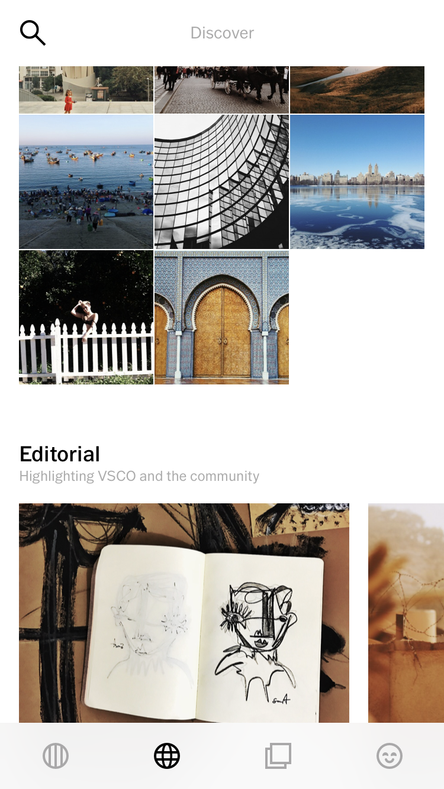

VSCO is an art and tech company headquarter in Oakland, Ca. It build creative tools and a community driven by self-expression.
This is a school project that we worked in a team of four and partnered with VSCO team to conduct user experience design research. Due to the non-disclosure agreement (NDA) with VSCO, some of the research results are not supposed to be disclosed.
When we first got this project we didn't have specific problem that the stakeholders focused on, neither did they have a particular business challenge to achieve. For the first 1-2 weeks, all we worked on was to conduct as much research around VSCO to find an area our group would focus on.
At first we found the navigation of the app was not intuitive enough for non-professionals, but insteading of asking direct questions around the navigation experience, keeping eyes open for all the content within VSCO product and community would gave us a bigger picture of its mission and how users interact with it. After analyzing the information architecture on VSCO website and app, we broke the content down into two types - one is the user-generated content, another is the content originally produced by VSCO. However, those two types of content were not integrated and organized well. We focused our research goals on the later, and finally on the event information VSCO released to create a cohesive community among heavy users.
"Feed" section on VSCO website.
In collaboration with the stakeholers, we set our research goals and objectives in two aspects.
We conducted 5 in-person interviews. Four were remote and one was face-to-face. All of the interviewees are heavy users and had participated in VSCO events. VSCO provided us with a list of contact information of event participants, and we managed to reach out the following five participatns who met the screening requirements.
The detailed interview guide as well as information of the participants are confidential because of the NDA. The interview process contains four sections - we began with a brief introduction with some warming questions, then broadly asked questions about their user experience, and narrowed down to specific questions about offline events, and finally invited them for the participant design.
We figured out 5 key findings after the interviews, and we offered recommendations regarding to each finding.
Unlike Instagram where users have more pressure from "followers" and "likes", the anti-social feature of VSCO enables more space for inspiring and creative ideas.
Users also mentioned other photo editing apps they use in addition to VSCO.
VSCO's counterparts mentioned by users
Four out of the five interviewees are professional photographers or designers. They use VSCO for mobile photography editing and build the accounts as their portfolio to show their art work.
They also mentioned that it was hard to navigate to browse others' photo and find other photographers. Compared with the browsing function, the photo editing function is more intuitive.
At first we identified Instagram as VSCO's competitor after the discussion with our stakeholders and competitive analysis. But during the research, we found users use VSCO and Instagram for different purposes. Instagram is more like a complement than a competitor to VSCO
Users mentioned that Instagram is more personal but less about serious photography. They also have better interactions with other users on Instagram. Compared with Instagram's features like "Storeis", VSCO's collection feature is confusing.
We analyzed and compared Instagram and VSCO accounts of the same user, trying to figure out the logic behind their way of interpreting the same photo on different platforms. The first user cropped the photo differently. The second one, added more captions on Instagram, which easily triggered more attention and interaction.
User cropped the same photo differently on Instagram and VSCO.
User added more captions and hashtags on Instagram but left it blank on VSCO.
All of the five interviewees said they followed some participants on VSCO after the event. Right now they all learned about the offline events by email invitation, but they would expect to know about the events via more sources.
Below are the top things event participants liked.
VSCO enabled users to meet up at their headquarter in Oakland, CA.
To summarize, there are 5 recommendations we concluded that VSCO would apply to its design to engage more users through offline events and increase their user experience with the app.
We delivered our presentation at the headquarter of VSCO in Oakland, CA. It was highly appreciated by our stakeholders.
Based on our research, VSCO redesigned some features and I noticed there are two main updates related to our concentration.
 VSCO has revised its UX content design based on our research.
Meanwhile, VSCO still keeps its non-social features so that they maintained high-quality content and provided a pure and innovative community for users without much pressure from the number of followers and likes. They've added some photo/video editing functions, and created a happy path for users.
Coming from a journalism background, our team didn't realize at the beginning there was such a big difference between journalistic interview and user research interview. Actually at first we all overlooked the significance of interview preparation. We just got used to apply the journalistic skills to conduct the research, which was more random and less organized.
However, the journalism background turned out to be so beneficial even if I was fresh new to UX research at this stage. It was the first end-to-end user research I've ever conducted. I'd like to address two main things I learned most transferrable from journalism to UX research.
We didn't say "user-centered" when we were pitching story ideas in journalism, but actually what we focused on was whether readers would be interested in the story and why they would like to read. Seeing the transformation in media industry, I'd like to say readers are more like users. They're not reading the stories but consuming them.
With this in mind, we were easy to be empathetic to users and think in their shoes. Especially for those content-heavy tech companies, how to optimize user experience is about how users interact with the content and the content fulfilled their needs.
Even though the interview process went out so different from journalism interviews, our reporting experience enabled us to be very comfortable to reach out to people, ask for their insights, take notes, and summarize by listening to the recordings. Storytelling is always essential when we discussed our research plans and finally delivered the outcome to the stakeholders.
The most challenging part for me is how to find a research topic. There was no specific requiement from our stakeholders when we first got this project. We've done a lot research individually, and had several rounds of group discussions to reach a research plan. Affinity diagram is super helpful for brainstorming. Another method I found useful to find pain points was to do a "self user testing" - imagining you're a new user, what do you feel good and bad about the product?
For the in-person interviews, I would expect we had more time to set our screening questions to recruit participants with more diverse backgrounds. This time we only interviewed users who have already participated in VSCO events. No surprise they're all heavy users living in big cities. An additional round of interviews with users who are engaged in the online community but have never participated in offline events may add more inisghts.
During the project, I've read Erika Hall's Just Enough Research recommended by our instructor. It offers me hands-on advice of design research for every stage in our project and is a practical guide for UX research professionals.